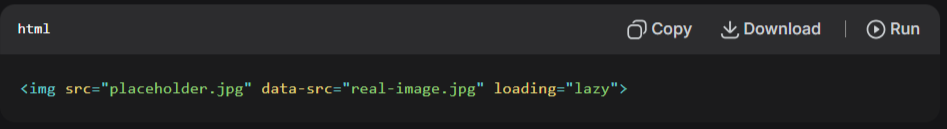
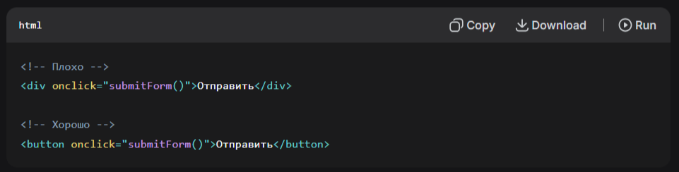
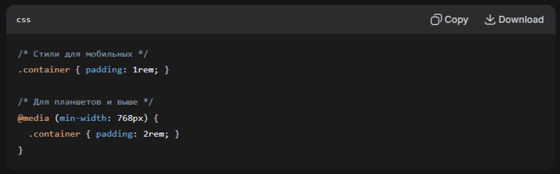
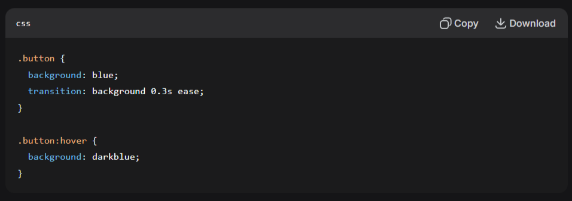

1. Производительность и оптимизация
Скорость загрузки — ключевой фактор удержания пользователей.
Используйте CDN для доставки статического контента (CSS, JS, изображения) с серверов, географически близких к пользователю.
⚡ Мгновенная загрузка
Контент доставляется с ближайшего сервера сети для пользователей из любой точки мира
🛡️ Надежность
Автоматическое перенаправление трафика при сбое серверов повышает отказоустойчивость
🚀 Снижение нагрузки
Значительное уменьшение нагрузки на основной сервер повышает стабильность работы
CDN (Content Delivery Network) — это географически распределённая сетевая инфраструктура, обеспечивающая быструю доставку контента пользователям веб-сервисов и сайтов. Входящие в состав CDN cерверы географически располагаются таким образом, чтобы сделать время ответа для пользователей сайта/сервиса минимальным.
Оптимизируйте изображения: конвертируйте в современные форматы WebP/AVIF, используйте lazy loading.
Lazy loading (отложенная загрузка, ленивая загрузка) — метод оптимизации веб-страниц, при котором отдельные элементы сайта, например изображения, видео или скрипты, подгружаются только тогда, когда они действительно нужны пользователю.
Минифицируйте код: удаляйте пробелы, комментарии, используйте tree-shaking.
Tree-shaking («тряска дерева») — термин в программировании, в частности в JavaScript, который означает удаление неиспользуемого кода (также известного как «мёртвый код») из финального бандла во время процесса сборки. Термин происходит от аналогии: «тряска дерева» — удаление ненужных ветвей кода.
2. Доступность (WCAG)
Делайте интерфейсы доступными для всех пользователей, включая людей с ограниченными возможностями.
Семантическая верстка: используйте теги <header>, <nav>, <main>, <button> вместо <div>.
👁️ Для слабовидящих
Семантические теги помогают скринридерам правильно интерпретировать структуру страницы
🔍 SEO-оптимизация
Поисковые системы лучше понимают семантически правильную разметку
⚡ Простота поддержки
Код становится более читаемым и понятным для других разработчиков
Это позволит вам повысить доступность сайта для людей с ограниченными возможностями и упростить дальнейшую поддержку проекта. Ваш код перестанет быть просто набором блоков, а станет логичной структурой, которую одинаково хорошо понимают и браузеры, и поисковые системы, и другие разработчики.
3. Адаптивность и отзывчивый дизайн
Сайт должен идеально работать на всех устройствах.
Mobile-first подход: начинайте проектирование с мобильной версии.
📱 Приоритет контента
Фокусировка на самом важном контенте и функционале для мобильных пользователей
⚡ Быстрая разработка
Проще расширять функционал от мобильной версии к десктопной, чем наоборот
🎯 Лучший пользовательский опыт
Оптимизированные сценарии использования для каждого типа устройств
Mobile-first подход заставит вас сосредоточиться на самом важном контенте и функционале, что сразу сделает ваш сайт удобнее для большинства пользователей. Это позволит вам создать по-настоящему эффективный интерфейс, который будет отлично работать на любом устройстве, а не урезанную версию десктопного дизайна. Такой подход гарантирует, что ключевые сценарии использования будут идеально отработаны именно на тех устройствах, где они наиболее востребованы.
Подход Mobile First («сначала мобильные») — концепция разработки веб-интерфейсов, при которой сначала создаётся версия сайта для мобильных устройств, а затем масштабируется для больших экранов. Этот подход противопоставляется традиционному Desktop First, где сначала делается дизайн для ПК, а затем «ужимается» под мобильные устройства.
Относительные единицы измерения: используйте %, vw, rem вместо фиксированных px.
Использование относительных единиц измерения позволит вам создавать по-настоящему гибкие интерфейсы, которые идеально адаптируются к любым размерам экрана. Это избавит вас от постоянных правок под каждый новый девайс и сделает ваш код более устойчивым к изменениям. Ваш сайт будет одинаково профессионально выглядеть как на маленьком смартфоне, так и на большом мониторе, без лишних усилий с вашей стороны.
CSS Grid и Flexbox для создания гибких, сложных макетов.
Освоение CSS Grid и Flexbox позволит вам легко создавать сложные адаптивные макеты, которые раньше требовали множества костылей и хаков. Это сделает вашу верстку более предсказуемой и надежной, а процесс разработки — значительно быстрее. Вы сможете реализовывать любые дизайнерские задумки без необходимости жертвовать адаптивностью или чистотой кода.
4. Микроанимации и обратная связь
Небольшие анимации делают интерфейс живым и отзывчивым.
CSS-переходы для плавных изменений состояний (hover, focus).
Использование CSS-переходов позволит вам легко добавлять плавные переходы между состояниями элементов, делая взаимодействие с интерфейсом более естественным и приятным. Это поможет вам направлять внимание пользователя и визуально подтверждать его действия без лишней сложности в коде.
Библиотеки анимаций: Framer Motion, GSAP — для сложных взаимодействий.
🎬 Framer Motion
Идеально для React-приложений, простая интеграция и декларативный подход
🚀 GSAP
Мощная библиотека для сложных последовательностей анимаций и высокой производительности
⚡ Производительность
Оптимизированные анимации, работающие на 60 FPS даже на слабых устройствах
Применение специализированных библиотек анимаций позволит вам создавать сложные и эффектные взаимодействия, которые было бы трудно или невозможно реализовать на чистом CSS. Это даст вам полный контроль над временными промежутками, последовательностями и физикой движений в ваших анимациях.
Framer Motion — библиотека анимации и жестов с открытым исходным кодом для React, разработанная компанией Framer. Позволяет создавать плавные анимации и динамичные взаимодействия с пользователем.
GSAP (GreenSock Animation Platform) — библиотека JavaScript для создания высокопроизводительных сложных анимаций. Широко используется в веб-разработке для анимации элементов HTML, CSS, SVG и холста.
Индикаторы загрузки: скелетоны, спиннеры — показывают, что система работает.
Использование современных индикаторов загрузки, таких как скелетоны, позволит вам значительно улучшить восприятие скорости работы приложения. Это поможет вам сохранить внимание пользователя во время неизбежных процессов загрузки и создаст ощущение отзывчивости интерфейса.
5. Валидация форм
Помогайте пользователям избегать ошибок при вводе данных.
Валидация в реальном времени: проверяйте данные по мере ввода.
🎯 Мгновенная обратная связь
Пользователь сразу видит ошибки и может их исправить до отправки формы
📉 Снижение ошибок
Предотвращение накопления множества ошибок к моменту отправки формы
💡 Обучающий эффект
Пользователь изучает требования к полям в процессе заполнения
Это позволит вам сразу направлять пользователя и предотвращать накопление ошибок к моменту отправки формы. Такой подход делает процесс заполнения интуитивным и обучающим — пользователь сразу видит, какие требования предъявляются к каждому полю.
Понятные сообщения об ошибках: точно указывайте, что нужно исправить.

Хорошие сообщения об ошибках избавят вас от раздраженных пользователей и повысят процент успешных отправок форм. Вы сможете четко объяснить, что пошло не так и как это исправить, вместо того чтобы показывать малопонятные технические формулировки.